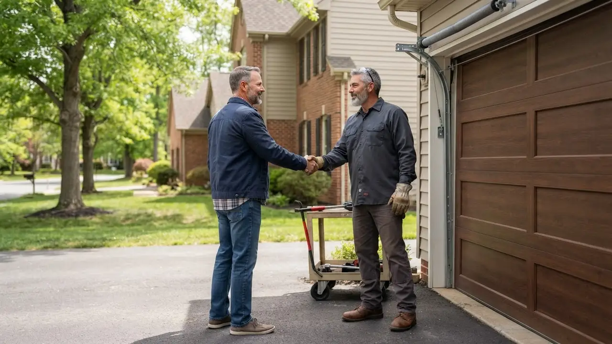

Your local team · Trinity Vicinity
Garage Door Repair in Trinity Vicinity Done Right
Garage Door Repair in Trinity Vicinity means fixing the door that will not close before you leave for work. We handle broken torsion springs, snapped cables, dead openers, and doors knocked off track on Trinity Street, Church Street, and French Street. Our trucks carry the springs, rollers, and remotes to finish most jobs in one visit. Call (302) 556-5080 and we will tell you what it takes to get your door moving again.
Local knowledge
Garage Door Repair in Trinity Vicinity You Can Count On
Garage Door Repair in Trinity Vicinity is what we do every week, not a side service we tacked onto a Wilmington route. Delaware Express Garage Door Service has worked the blocks around Trinity Church, Old Swedes Church, and Fort Christina Park since 2010. The housing stock here is old, and so are the garages. We see 1920s carriage houses off Trinity Street with original wood doors, narrow driveways near the Christina River, and opener motors that have been patched three times. That mix demands a company that carries parts for obsolete hardware and knows how to work in tight spaces. We are a garage door company Trinity Vicinity homeowners call because we show up when we say we will and we price the job before we start. Whether it is a torsion spring that let go on a Sunday night or a sensor that will not line up, we get the door working and we clean up after ourselves.

Services available in Trinity Vicinity
Garage Door Repair Services Available in Trinity Vicinity
Trinity Vicinity garage door repair demand looks different from the suburbs. Doors here are older, garages are detached, and the river air eats metal. We stock torsion springs, galvanized steel cables, nylon rollers, and LiftMaster and Chamberlain openers so most repairs finish in one trip. If you have been searching for garage door repair in Trinity Vicinity near me, we are the local crew that answers the phone and shows up.
01
Garage Door Repair
General repair for doors that stick, slam, or stop halfway. We work on Trinity Street and French Street garages with original wood doors and modern steel doors alike. Our techs carry winding bars, C-clamps, and a socket wrench set to handle torsion springs, rollers, and hinges in one visit.
View service 02Garage Door Installation
New door installation for Trinity Vicinity homes replacing worn-out wood doors. We measure the opening, check headroom, and match the door to the house. Clopay and Amarr options in stock sizes fit most Trinity Vicinity garages without custom lead times.
View service 03Garage Door Opener Repair
Opener repair for LiftMaster, Chamberlain, Genie, and Craftsman units common in Trinity Vicinity. We diagnose motor failure, stripped gears, and remote issues on the spot. If the opener is older than the door, we will tell you whether a repair or replacement makes more sense.
View service 04Garage Door Opener Installation
Opener installation with UL 325 safety compliance for Trinity Vicinity garages. We install belt-drive and chain-drive units, wire the safety sensors, and program remotes and keypads. Most installs take two to three hours and include a walkthrough of the safety reverse test.
View service 05Garage Door Spring Repair
Torsion and extension spring repair for Trinity Vicinity doors. We replace both springs when one breaks because the second is usually close behind. Winding bars and proper tension are non-negotiable, and we test the door balance before we leave.
View service 06Garage Door Cable Repair
Cable repair for snapped or frayed galvanized steel cables. River humidity near the Christina River rusts cables faster here, so we inspect the drums and bottom brackets while we are in there. Most cable jobs finish in under two hours.
View serviceBuilt around the city
How We Execute Garage Door Repair in Trinity Vicinity
Trinity Vicinity garage door repair starts with knowing the neighborhood. Streets like Trinity Street and Church Street are narrow, and some driveways sit tight against the alley. We send a compact truck and confirm parking before we roll. Once on site, we inspect the springs, cables, rollers, and opener, then quote the job before we touch a wrench. Most repairs follow UL 325 safety standards and Delaware contractor license requirements. In winter, frozen hinges and stiff weather stripping are common. In summer, heat expands steel tracks and throws off alignment. We carry the parts to handle both. If you need affordable garage door repair Trinity Vicinity DE prices, we quote flat rates and stick to them. No surprise charges when the job is done.
Full-size service trucks cannot always reach garages off Trinity Street and Church Street. Parking is limited, and a blocked alley delays the job for everyone. We dispatch compact vans to Trinity Vicinity and confirm access before we arrive. If the alley is blocked, we park on the street and carry tools in. That planning keeps us on schedule and keeps your neighbors happy.
Proximity to the Christina River speeds up rust on cables, hinges, and bottom brackets. Doors near the water need hardware replacement more often than inland doors. We use galvanized steel cables and rust-resistant brackets on Trinity Vicinity jobs. During every repair we inspect the hardware for corrosion and replace anything that is close to failing. A yearly tune-up catches rust before it becomes a breakdown.
Many Trinity Vicinity garages still have original wood doors and openers from the 1980s or 1990s. Parts fail more often, and some components are no longer made. We stock parts for older LiftMaster, Genie, and Craftsman openers and keep common spring sizes on the truck. When a part is obsolete, we tell you the repair and replacement options with prices so you can decide. No pressure either way.
UL 325 covers entrapment protection for automatic garage door operators. Every opener we install or repair in Trinity Vicinity gets tested for safety reverse and sensor function before we leave.
Garage door work in Delaware requires a licensed contractor. We carry the license and can provide proof on request. It protects you if something goes wrong on the job.
This standard covers garage door safety and performance. We follow it when installing springs, cables, and hardware so the door operates within the manufacturer's spec and holds up over time.
Common local problems
Common Garage Door Problems in Trinity Vicinity
Broken torsion spring on older doors
Rusted cables and hardware near the river
Opener motor failure on aging units
Doors off track from impact or worn rollers
Warning signs
Signs You Need Garage Door Repair in Trinity Vicinity
A door that moves slower than usual often has a failing spring or a worn opener motor. In Trinity Vicinity's older garages, this is usually the first sign of spring fatigue. If you ignore it, the spring can snap and leave the door stuck.
Grinding means metal is rubbing metal. It could be dry rollers, a misaligned track, or a failing bearing. Squealing often points to a worn belt or chain. Both get worse with time and can damage the opener.
This is usually a sensor issue or a misadjusted travel limit. In Trinity Vicinity, sun glare and loose brackets are common causes. It is a safety problem because the door may not close when you need it to.
A gap means the weather stripping or bottom seal is worn. In Trinity Vicinity's river climate, that gap lets in moisture, drafts, and pests. Replacing the seal is a quick job that protects the garage and lowers energy bills.
A door that is off track is a safety hazard. Do not try to force it open or closed. Call us immediately. We treat off-track calls as priority jobs and can usually get there the same day.
Pricing and expectations
Garage Door Repair Pricing in Trinity Vicinity
Typical 2026 pricing for garage door repair in Trinity Vicinity runs $180 to $450 for most jobs. A standard torsion spring replacement is usually $250 to $350. Opener repair runs $150 to $300 depending on the part. Cable replacement is $180 to $280. These ranges assume a standard residential door. Custom wood doors, low-headroom garages, and commercial doors can cost more. We quote flat rates before we start, so you know the number. If you need affordable garage door repair Trinity Vicinity DE prices, call us and we will give you a straight answer.
Standard steel doors use common springs and cables that cost less. Custom wood doors and older hardware may need special-order parts, which adds to the price.
Emergency calls after hours or on weekends carry a higher rate. Same-day service during business hours is priced at our standard rate. We tell you the difference before we dispatch.
Narrow streets and tight alleys in Trinity Vicinity can add time to a job. If we need to carry tools a long distance or park far away, we factor that into the quote.
We know the route
Navigating Trinity Vicinity: Landmarks We Use
Trinity Vicinity is compact, but the one-way streets and narrow blocks can slow down a crew that does not know the area. We use Trinity Church, Old Swedes Church, and Fort Christina Park as orientation points when we route calls. The Christina River and Wilmington Riverfront mark the eastern edge of our service area. If you are near any of these landmarks, we can find you quickly.
Trinity Church
A central orientation point for calls in the northern part of Trinity Vicinity. We use it to confirm which side of the neighborhood a job is on before we dispatch.
Old Swedes Church
Marks the southern edge of the historic district. Jobs near here often involve older doors and low-headroom garages, so we note it when planning the route.
Fort Christina Park
A reference point near the Christina River. Calls in this area often involve rust-related repairs, so we bring extra galvanized hardware when the job is nearby.
Christina River
The river defines the eastern boundary of Trinity Vicinity. Humidity from the water affects hardware on nearby blocks, so we factor that into every repair quote.
Wilmington Riverfront
A nearby commercial and residential area that shares the same river humidity. We serve Riverfront addresses on the same routes as Trinity Vicinity calls.
Wilmington Riverfront
A mixed-use district along the Christina River with restaurants, offices, and residential buildings. Some properties have commercial garage doors and loading areas that need service.
Trinity Vicinity service coverage
Neighborhoods We Serve in Trinity Vicinity
Trinity Vicinity is not one uniform neighborhood. The blocks near the river have different needs than the blocks closer to the historic district. We work all of them and know the shortcuts, the parking, and the door types on each street.
Trinity Vicinity NorthTrinity Vicinity SouthTrinity StreetChurch Street
Delaware Express Garage Door Service3601 Old Capitol Trl A5, Wilmington, DE 19808, United States, Wilmington, Delaware
Local results
Recent Garage Door Repair Jobs in Trinity Vicinity
A homeowner on Trinity Street called at 7 a.m. with a snapped torsion spring. The door was stuck open and would not close.
We arrived by 9 a.m. with the correct spring size on the truck. The tech used winding bars to remove the old spring, installed a new pair, and tested the door balance. He also lubricated the rollers and hinges while he was there. Door was working by 10:30 a.m. The homeowner paid the quoted flat rate, no extra charges.
A property manager near French Street had a commercial rolling door that would not open. Tenants were stuck waiting.
We prioritized the call and arrived within two hours. The issue was a stripped gear in the opener. We replaced the gear set, tested the door through several cycles, and adjusted the travel limits. Door was back in service the same afternoon. The manager scheduled a maintenance plan to prevent future breakdowns.
A homeowner near Old Swedes Church had a door that reversed randomly and sometimes would not close at all.
The sensors were misaligned and one bracket was loose. We realigned the sensors, tightened the bracket, and tested the safety reverse. We also replaced a frayed cable we noticed during the inspection. Door closed reliably after the visit. The homeowner signed up for an annual tune-up to catch small issues early.
Notes from local customers
What Trinity Vicinity Customers Say
Our garage door spring broke on a Saturday morning. I called Delaware Express and they had a tech out by early afternoon. He replaced both springs, lubricated everything, and showed me how to test the safety reverse. The price was exactly what he quoted on the phone. I will use them again.
The opener on our detached garage died and we could not get the car out. They came the same day, diagnosed a stripped gear, and had the part on the truck. Took about an hour and a half. The tech was polite and cleaned up the metal shavings. Good local company.
We had a cable snap and the door came off track. They treated it as an emergency and arrived within two hours. The repair took longer than expected because the drum was also worn, but they explained everything and did not charge extra for the drum. Door works smoothly now.
Plan for the season
How Seasons Affect Garage Door Repair in Trinity Vicinity
Schedule a tune-up in early spring. We lubricate the moving parts and check for rust before it becomes a bigger problem.
Test your door's balance by disconnecting the opener and lifting it halfway. If it does not stay in place, call us for a spring adjustment.
Replace worn weather stripping and bottom seals in the fall. It keeps cold air out and prevents frozen hinges in January.
Keep the garage door lubricated with a cold-weather lubricant. If the door sounds strained in the cold, call us before the spring breaks.
Nearby service areas
Nearby Cities We Serve from Trinity Vicinity
Trinity Vicinity sits close to several Wilmington neighborhoods, and we cover them all on the same routes. If you are in one of these areas, we can usually reach you within the same day.
Before you hire
What to Ask Before Hiring a Garage Door Repair in Trinity Vicinity
Are you licensed and insured in Delaware?
Do you carry the parts for my door on the truck?
Will you quote a flat rate before starting?
Do you offer emergency service in Trinity Vicinity?
What warranty do you offer on parts and labor?
Trust and compliance
Trust and Local Compliance
Delaware contractor license
DASMA certification
Door & Access Systems Manufacturers Association
IDEA certification
Institute of Door Dealer Education and Accreditation
Wilmington Chamber of Commerce
Member
New Castle County Chamber of Commerce
Member
Most repairs run $180 to $450 in 2026. A torsion spring replacement is typically $250 to $350. Opener repair runs $150 to $300. Cable replacement is $180 to $280. These prices assume a standard residential door. Custom wood doors and commercial doors cost more. We quote flat rates before we start so you know the number.
We cannot speak for other companies, but we have served Trinity Vicinity since 2010. We are licensed, insured, and we stock parts for older doors common in this neighborhood. Our customers on Trinity Street and Church Street keep calling us back. Call (302) 556-5080 and judge for yourself.
Yes. We run 24/7 emergency garage door repair Trinity Vicinity DE calls. If your door will not close or is stuck open, call (302) 556-5080 any hour. We prioritize calls that leave a home unsecured. After-hours rates apply, and we tell you the rate before we dispatch.
Yes. Same-day service is available for most repairs booked before noon. We keep a stocked van in the Trinity Vicinity area so we can reach Trinity Street, Church Street, and French Street quickly. Call early in the day for the best chance at a same-day visit.
Do not try to open the door. A broken spring makes the door unsafe to lift. Call us at (302) 556-5080 and we will schedule a repair. We replace both springs at once so you do not pay a second service call when the other spring fails. Most spring jobs finish in under two hours.
Your next step is waiting
Get Garage Door Repair in Trinity Vicinity Today
If your garage door is stuck, noisy, or off track, call Delaware Express Garage Door Service. We have served Trinity Vicinity since 2010 and we know the doors, the streets, and the weather here. Same-day service is available for most calls booked before noon. We quote flat rates before we start. Call (302) 556-5080 and we will get your door working again.
Start with the basics
Call For Garage Door Service
Call (302) 556-5080 and tell us what your door is doing. We answer during business hours and run emergency calls after hours. Most days we can get a tech to you the same day, and we will give you a window, not a maybe.